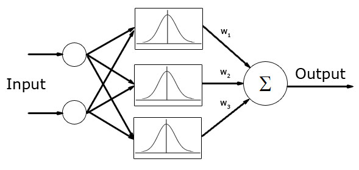

A Radial Basis Function (RBF) neural network has input layer, hidden layer and output layer. The neurons in the hidden layer contain Gaussian transfer function, and its output is a linear combination of radial basis functions.
They are used in function approximation, time series prediction, and control.
[http://en.wikipedia.org/wiki/Radial_basis_function_network]

To create and train RBF neural network with Neuroph Studio do the following:
Step 1. To create Neuroph project click File > New Project.
Select Neuroph Project, click Next.

Enter project name and location, click Finish.

This created the project, next create neural network.
Step 2. To create RBF network click File > New File

Select project from Project drop-down menu, select Neural Network file type, click next. Enter network name, select RBF network type, click next.

Enter number of neurons in input layer, and click Finish button.

This will create the RBF neural network with two neurons in input layer, three neurons in rbf layer and one neuron in output layer.

Now we shall train this simple network, to learn from data. First we have to create the training set
Step 3. In main menu click File > New File to open training set wizard.
Select Training set file type, then click next.

Step 5. Train network
TODO
Step 6. Test network
TODO